Part C · Workflow
Workflow, tab by tab
The sample run from start to finish: every control you touch, in the order you touch it, with the settings used for the figures in this manual.
6Tab 1 · Load and prepare imagery
6.1 Load the orthomosaic
- On Tab 1, under Input Data, click Browse next to Orthomosaic and pick
Ortho_sample.tif. You can also paste a path and press Enter. - The image loads at once and fills the viewer. The console reports the file and the workspace folder,
Ortho_sample_workspace, which is created next to the image the first time you save. - The line under the resample slider shows the native resolution:
Native: 8.000 cm/px (6807×5037 px).
Lite Land reads the first three bands as red, green and blue, and uses the file's mask (or alpha band) to ignore empty corners of rotated mosaics.
6.2 Add a DSM (optional, recommended)
- Click Browse next to Elevation Model (Optional DSM) and pick
DSM_sample.tif. - The console confirms
DSM Status: ACTIVE (Elevation maps included). Tab 2's DSM Controls box shows the same status.
The DSM is always regridded onto the orthomosaic's pixel grid so each object's height is read from the same pixels as its colour. A finer DSM is averaged down; a coarser one is interpolated up, and the console notes that its heights are only as precise as its own grid. With a DSM loaded the classifier uses 23 features instead of 19.
Unload DSM drops it again. Do that before segmenting if you want a colour-only model.
6.3 Resample to a working resolution
Very fine imagery makes more, smaller, noisier objects and uses more memory. Resampling re-reads the file at a coarser resolution. It always reads from the original file, so going to 10 cm and back to 8 cm loses nothing.
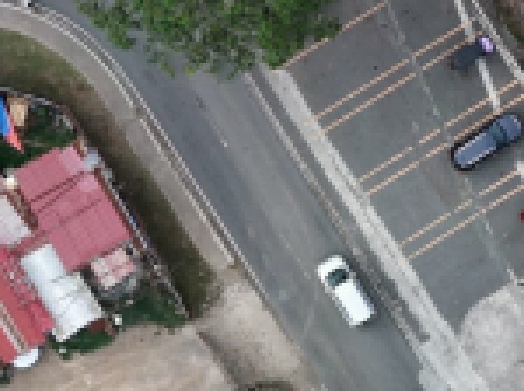
- Type a Target Resolution of 10 cm/px, or move the Resample Scale slider (10 cm is 80% of the native 8 cm). The cm/px box appears only for projected coordinate systems such as UTM.
- Check the preview line under the slider: it shows the target resolution and the new image size, 5446 × 4030 px for the sample.
- Click Apply Resample. A loaded DSM is regridded to the new size automatically.
Resampling clears downstream work. The segmentation, the classification and all training samples are tied to the old pixel grid and are cleared. Your class names and colours are kept, and so are accuracy points (they are stored in map coordinates). Resample first, then segment.
6.4 Colour correction
Click Color Correction to open the panel. Auto-Correct stretches the image so its darkest 2% and brightest 2% of values become black and white. The sliders adjust brightness, contrast, hue, saturation, temperature and the red, green and blue gains; Reset Colors undoes everything.
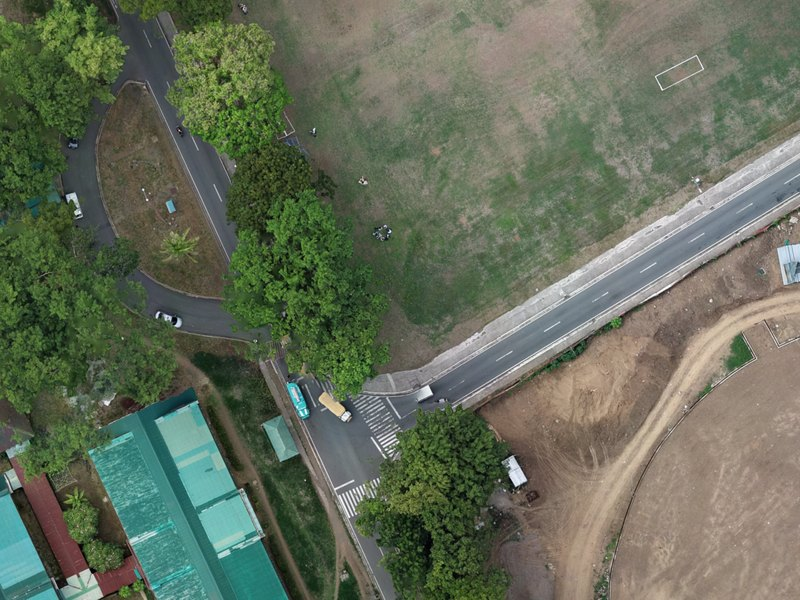
OriginalAuto-Correct (2–98%)What correction changes. The corrected image is what the segmenter sees, so it changes where boundaries fall. The 23 features, however, are always measured on the original, uncorrected pixels. Correction therefore helps segmentation on dull or hazy imagery but does not shift the colour values the classifier learns from.
6.5 Elevation overlay
Tick Show Elevation above the viewer to lay the shaded DSM over the image, and set its Opacity (default 60%). Use it to confirm the DSM lines up with the image: roof edges and crown outlines should sit exactly on their shading.
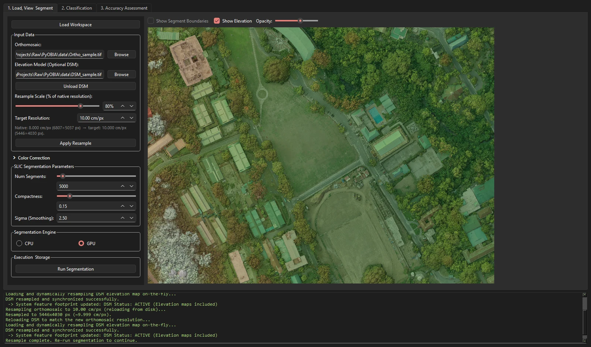
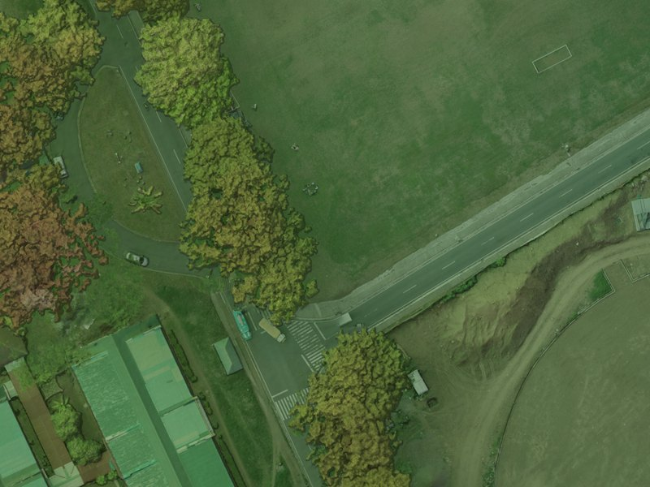
7Tab 1 · Segment the image
| Control | Range | Default | Sample run | Start here |
|---|---|---|---|---|
| Num Segments | 100–100,000 | 5,000 | 8,000 | Aim for objects of a few m² to a few tens of m²: crown- and roof-part sized. Scenes of 5,000–20,000 segments have worked well. |
| Compactness | 0.01–1.00 | 0.15 | 0.15 | Keep 0.15. Lower only if segments cut across clear edges. |
| Sigma (Smoothing) | 0–10 | 2.5 | 2.5 | Keep 2.5. Raise if segments look ragged or grid-like. |
| Segmentation Engine | CPU · GPU | GPU if found | GPU | Use GPU when available. |
The Num Segments slider snaps to steps of 500; type in the box for other values.
- Set the four controls above.
- Click Run Segmentation. The button reads Processing… and the console counts through four steps: segmentation, display layers, polygons, then features in batches of 2,000 objects.
- When it finishes, the console prints the object count and time (
Compiled 7618 polygons in 33.4 secondson the sample) and the app moves to Tab 2. - Return to Tab 1 and tick Show Segment Boundaries to inspect the result over the image.
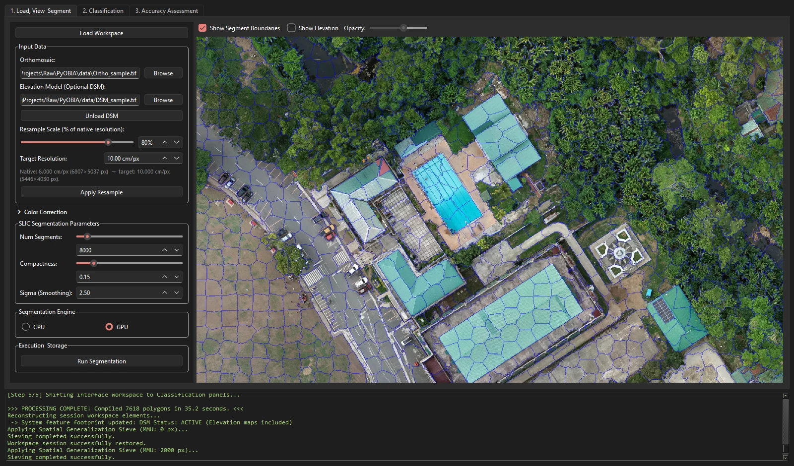
Checklist before you move on. (1) No segment mixes two of your classes. (2) Small things you want to map, such as narrow paths or single trees, get their own segments. (3) Large uniform areas are not shattered into hundreds of slivers. If (1) or (2) fails, raise Num Segments. If only (3) fails, you can live with it, or lower Num Segments.
8Tab 2 · Build classes and collect training samples
8.1 Create classes
- Type a class name in Enter new class name… and click Add.
- Pick a colour in the dialog. It is used for training samples, the map, the exported GeoTIFF and the QGIS style.
- Repeat for each class. The sample uses Grass, Trees, Bare, Impervious and Building, in that order. The order matters: it sets each class's value in the exported raster (Grass = 1 … Building = 5).
Double-click a class to rename it or change its colour. Merge Selected Classes folds two or more classes into one (select them with Ctrl-click). Remove Selected Class deletes a class; Clear Selected Class and Clear All Training Data drop samples but keep classes. All four ask before acting.
8.2 Click and paint samples
- Click a class in the list to make it active. It turns bold.
- Click an object in the viewer to add it as a sample of that class. It is tinted in the class colour, and the count beside the class name goes up.
- Ctrl + drag to paint: every object the cursor crosses joins the active class. Useful on large uniform areas.
- Click a sample again to remove it.
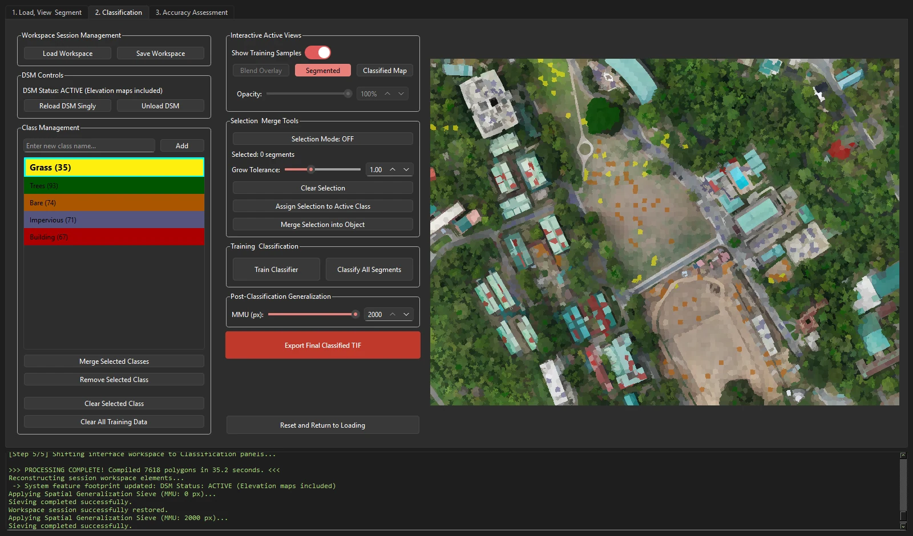
8.3 Grow a selection by similarity
The grow tool selects a patch of similar objects from one click, which is faster than painting a big field or roof.
- Click Selection Mode: OFF to turn it on. Clicks now select instead of labelling; selected objects show in cyan.
- Click one object as a seed.
- Drag Grow Tolerance up. The selection spreads through touching objects that are similar to the seed.
- Click Assign Selection to Active Class to make them all samples, or Clear Selection. Ctrl+Z undoes selection steps.
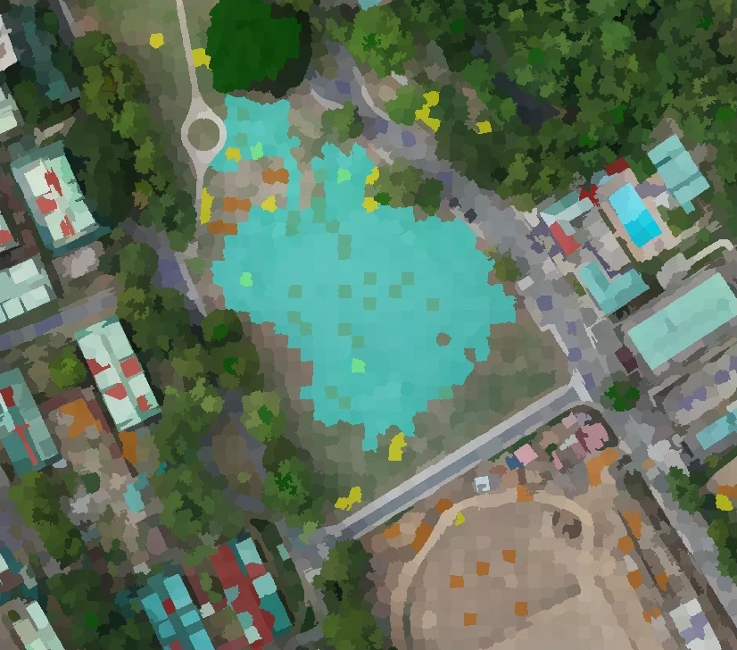
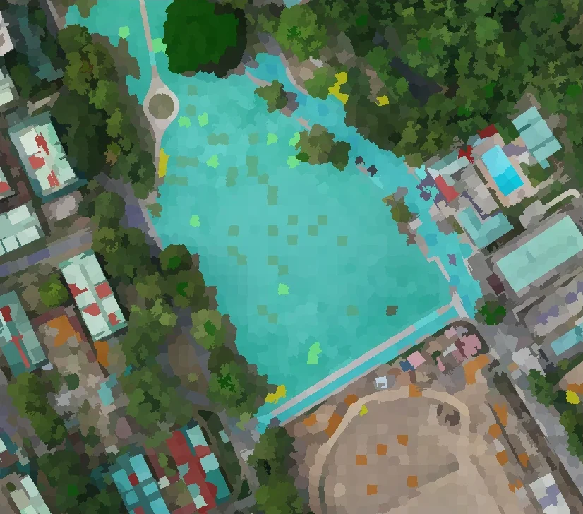
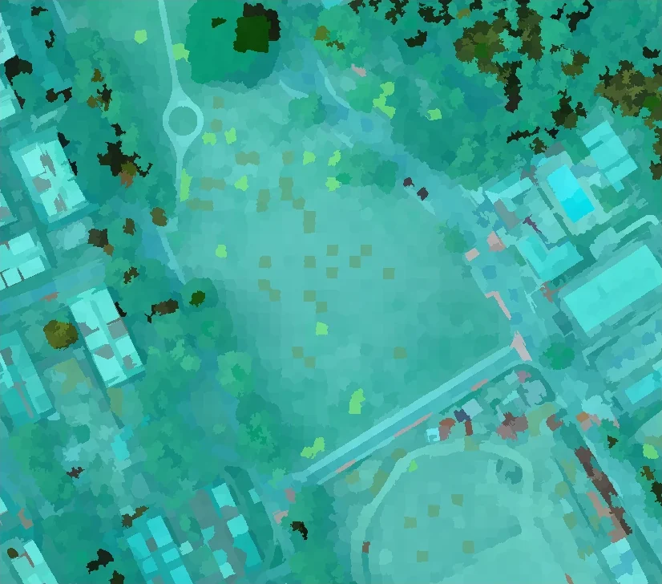
How the tolerance works, and why it can leak
Similarity uses six features: mean red, green, blue and brightness, GLCM contrast and homogeneity. Each is divided by its spread across the whole scene, and a neighbour joins if its distance to the seed's average is within tolerance × √6. Growth spreads through any touching object that passes, not the closest first, and the spread is measured over the whole scene, so a high tolerance can cross into different-looking ground. Start low and raise it in small steps. Each new click starts its own growth at tolerance 0, so earlier picks stay as they were.
8.4 Merge fragments into one object
SLIC sometimes cuts one real object (a large roof, a single big crown) into many pieces. Each piece then has the wrong area and shape. Merge them before training so the classifier sees the real outline.
- With Selection Mode on, select the pieces (click, grow, or Ctrl+drag).
- Click Merge Selection into Object. The pieces become one object, its features are recomputed, and its neighbours' context features are updated. If any piece was a training sample, the merged object keeps that class; if the pieces belonged to different classes, the console warns and the first class in the list wins.
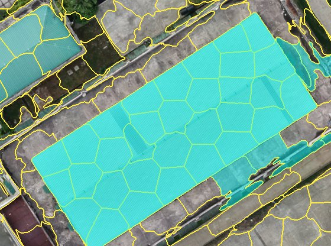
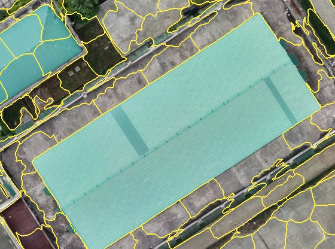
A m² roof that SLIC split into pieces, merged into one. Merging cannot be undone, short of re-running segmentation.
8.5 Where to put samples
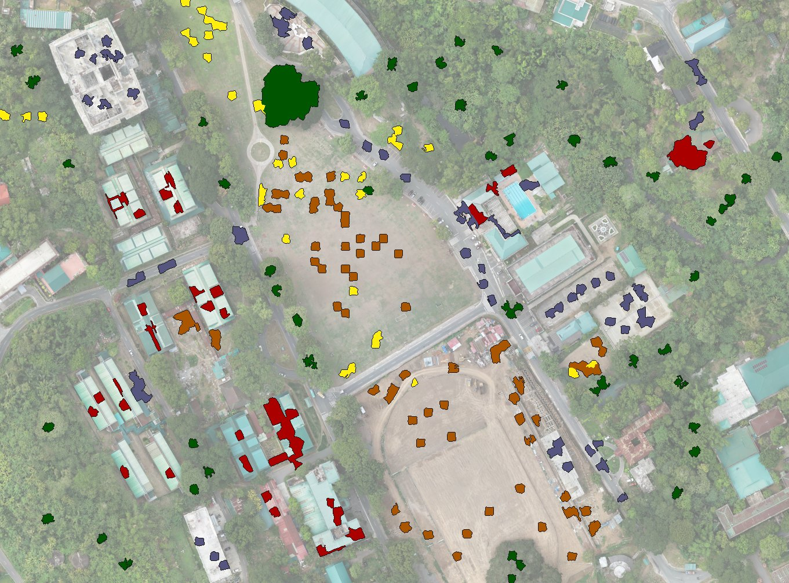
- Spread samples across the whole scene, not in one cluster. Light, shade and slope change from place to place.
- Cover every look a class has. In the sample, Bare covers both the graded earthworks and the worn sports field; Impervious covers asphalt, concrete paving and courts; Building covers teal, red, white and concrete roofs.
- Only label objects you are sure of. One wrong sample teaches the model a wrong rule. Skip objects that straddle two classes, such as a crown hanging over a roof edge.
- Start with about 6–10 per class, then add samples where the map is wrong (section 9.3).
9Tab 2 · Train, classify, generalise and export
9.1 Train and classify
- Click Train Classifier. You need samples in at least two classes. The console reports the feature count (
23D feature space activewith a DSM) and the number of samples. - Click Classify All Segments. Every object gets a class within seconds, the sieve is applied, and the view switches to the classified map.
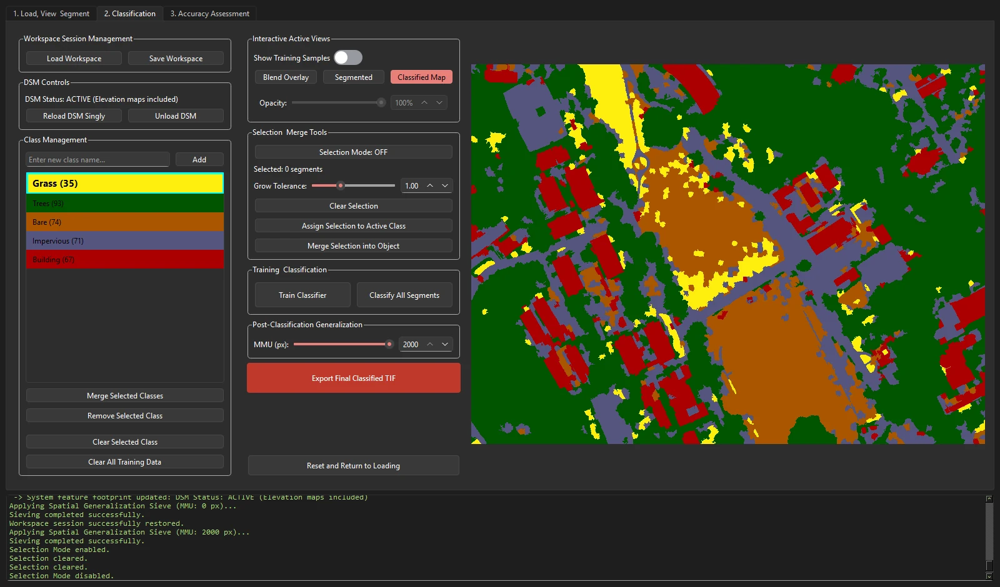
9.2 Check with the views
The view buttons switch what the viewer shows. Flip between them often: errors that hide in one view jump out in another.
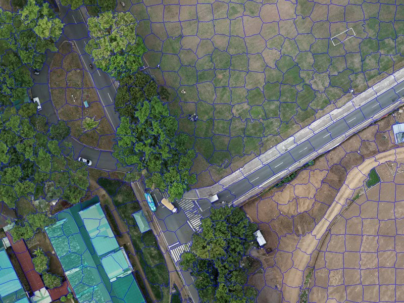

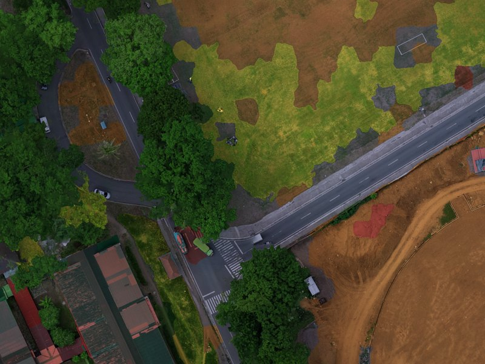
After classifying, the Raw Ortho button becomes the Raw/Classified toggle. Blend Overlay is available once a classification exists.
9.3 The retraining loop
Retraining is the core of the method. Each round removes more misclassified objects; on the sample, most visible errors were gone after a few rounds. Part B, 5.5 replays the loop on the sample's own labels to show how measured accuracy grows round by round.
- Scan the whole map in Blend Overlay at 50–70% opacity. Note each kind of error: "shaded lawn read as Trees", "dirt yard read as Impervious".
- Turn off Selection Mode, pick the correct class, and click two or three wrongly classed objects of each kind, in different parts of the scene.
- Train Classifier, then Classify All Segments again. All samples, old and new, are used.
- Repeat until a round changes little. Then measure on Tab 3 instead of judging by eye.
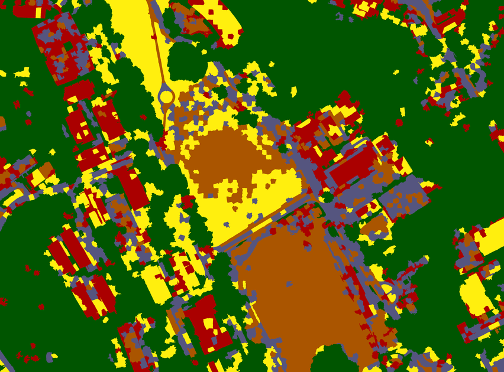
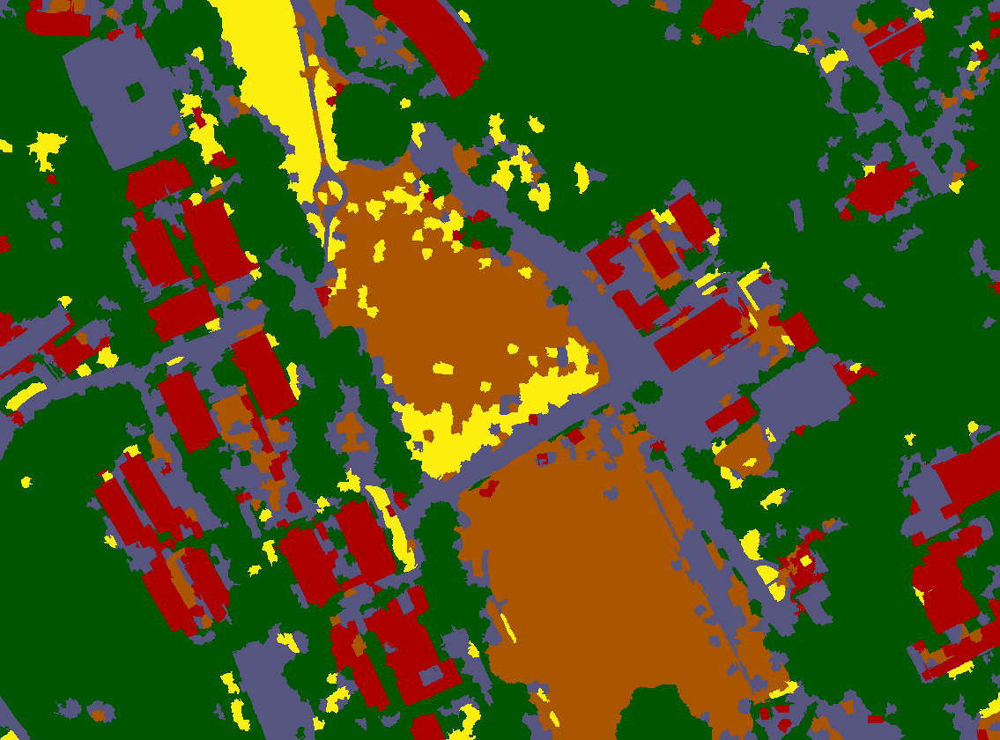
9.4 Set a minimum mapping unit
Under Post-Classification Generalization, set MMU (px) from 0 to 2,000. Patches of one class smaller than this are absorbed by the class around them. The map updates when you release the slider or leave the box. To turn pixels into area, multiply by the pixel area: at 10 cm, 1,000 px is 10 m².
On the sample at 10 cm, values below about 1,400 px change nothing because every object is already larger. The sample session used a value between 1,500 and 2,000 px (the session file does not record it; both reproduce its report). See Part B, 5.6 for the before-and-after.
9.5 Export and save
- Click Export Final Classified TIF. The save dialog suggests
Ortho_sample_classified.tifin the workspace folder. - Lite Land writes a single-band GeoTIFF (value 1 = first class in the list, 2 = second, …, 0 = no data) with your colours embedded, plus a
.qmlstyle file of the same name for QGIS. - Click Save Workspace to keep the session: segments, features, classes, training samples, the classification and any accuracy points. Load Workspace restores it later.
- 1 Grass
- 2 Trees
- 3 Bare
- 4 Impervious
- 5 Building
10Tab 3 · Assess accuracy
10.1 Choose a reference source
Under Ground Truth Source, pick one:
- Import Ground Truth CSV: field points you collected. Browse to the CSV; tick Also generate expert-visual points if you want to add photo-interpreted points on top.
- No Ground Truth Available (Generate Expert Points): Lite Land scatters random points for you to label from the image.
A ground-truth CSV needs an x column, a y column and a class column, with coordinates in the orthomosaic's own coordinate system. Header names are matched loosely; class names must match Tab 2 exactly, or the import stops and lists the mismatches.
| x (or lon, longitude, easting) | y (or lat, latitude, northing) | class (or reference_class, label, class_name) |
|---|---|---|
| 310253.63 | 1566272.21 | Impervious |
| 310249.63 | 1566253.01 | Bare |
| 309969.67 | 1566381.34 | Trees |
10.2 Generate and label the points
- Set Points to Add (default 200) and click Generate Random Points. Points avoid your training objects. Clicking again adds another batch.
- Double-click a point in the list, or press . and ,, to fly to it. The viewer shows the raw image only.
- Decide what is under the point. Right-click it and choose Assign: <class>, or tick several points and use Assign checked to.
- Use Save Points as you go; a long labelling session is real work.
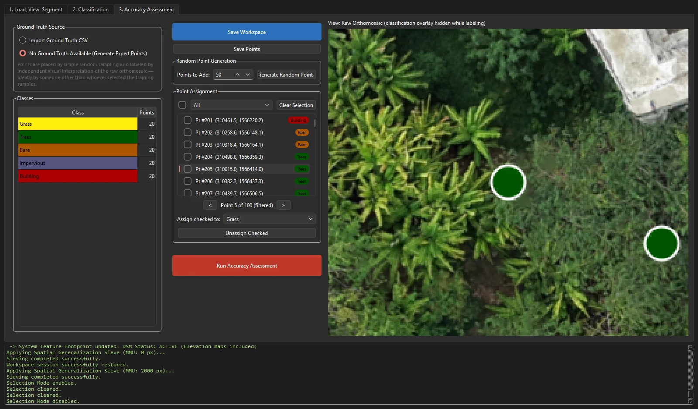
Label what is under the point, not what is nearby. If the point sits on a roof edge under an overhanging crown, label what covers that spot from above. If you truly cannot tell, delete the point rather than guess. Ideally, someone other than the person who picked the training samples does the labelling.
10.3 Run the assessment
Click Run Accuracy Assessment. Unlabelled points are left out (the warning says how many). Lite Land reads each point's class from the same sieved raster that Export writes, so you are assessing the actual deliverable. It writes two files to the workspace folder:
accuracy_report.csv: the confusion matrix with totals, User's and Producer's accuracy per class, overall accuracy, the sample size, and a footnote on where points came from.accuracy_points.gpkg: every point with its reference class, map class and source, ready for GIS.
10.4 Read the result
The sample session's own assessment · not a validated result
The matrix below is the sample session's accuracy_report.csv: 100 points labelled by photo-interpretation of the orthomosaic with the classification hidden, 20 per class, scored against the sieved map. It shows how to read the output. Photo-interpreted points are reference data, not field-checked ground truth, so this is not a validated accuracy figure for the site.
- Read the diagonal first. of points agree (overall accuracy). With 20 points per class, each point is worth 5 percentage points of that class's accuracy.
- Impervious is over-mapped. It finds of real Impervious points, but only of what the map calls Impervious is right. Its row holds 4 Bare points (compacted dirt and tracks), 3 Building points (flat concrete roofs) and 1 Grass point.
- Grass, Bare and Building are reliable but incomplete. When the map says one of them, it is right , and of the time. Each still misses 4 of its 20 points, mostly to Impervious and Trees.
- Trees are found completely (). The map also absorbs 2 Grass points, 1 Impervious and 1 Building into Trees, so its user's accuracy is .
Next retraining target: the Impervious row. Add Bare samples on compacted dirt and tracks, and Building samples on flat concrete roofs, then retrain and rerun the assessment.
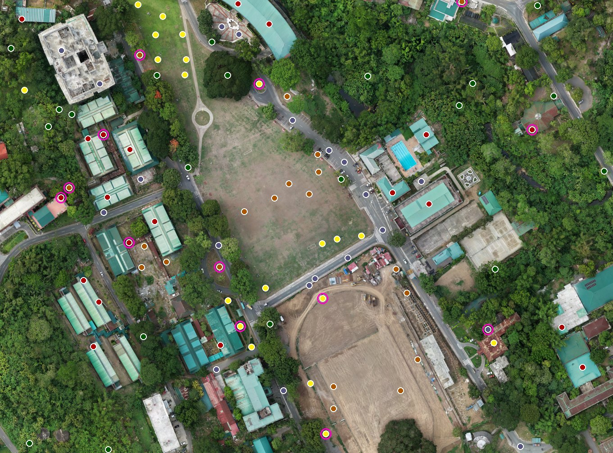